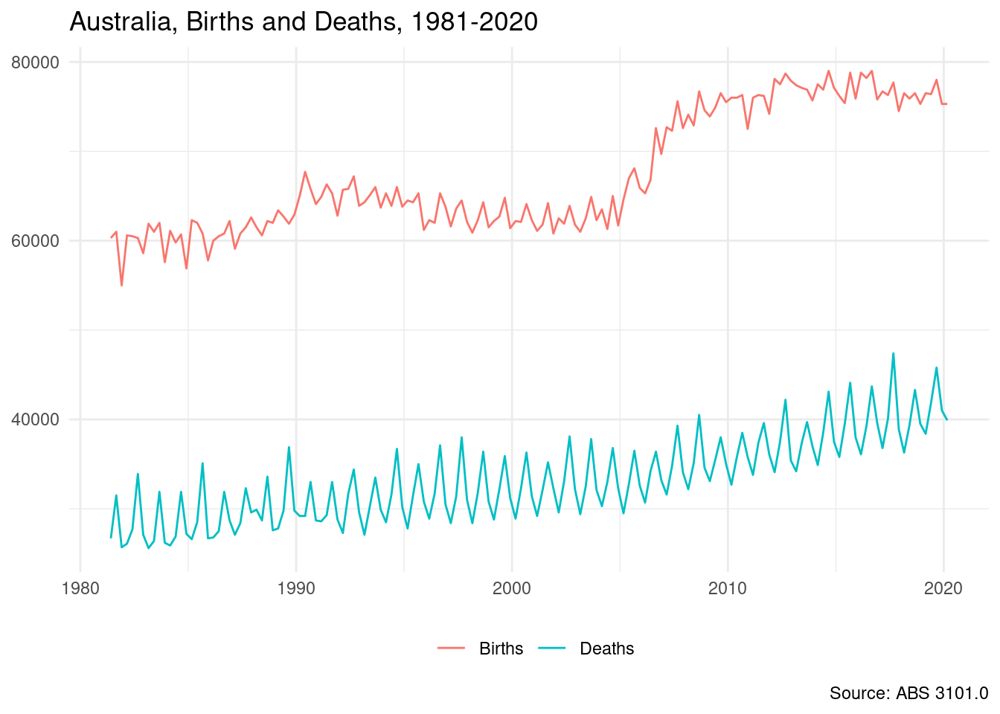

6 Official statistics
Traditionally official statistics and government released data has been accessed from the agency’s website via awkwardly structured Excel sheets and dense zip files.
With the growth of the open data movement, much more government data is publicly available, and a good starting point for Australian data is the various state and territory data.
There are a growing number of R packages for easily and directly accessing official statistics data, although coverage of Australian data sources is limited. A good resource for official statistics is the Awesome official statistics software list.
readabs
A very special mention goes to the readabs package, created and maintained by Matt Cowgill from the Grattan Institute.
readabs is amazingly useful, but the ABS data holdings are large and it can take a bit of getting used to. A good starting point is the introductory vignette.
The example below presents birth and death rates from 1981 to 2020, using data loaded directly from the read_abs() function.
library(readabs)
# Load ABS National, state and territory population estimate
# https://www.abs.gov.au/statistics/people/population/national-state-and-territory-population/latest-release
pop <- read_abs("3101.0", tables = 1)
#> Finding filenames for tables corresponding to ABS catalogue 3101.0
#> Attempting to download files from catalogue 3101.0, National, state and territory population
#> Extracting data from downloaded spreadsheets
#> Tidying data from imported ABS spreadsheets
pop
#> # A tibble: 2,028 x 12
#> table_no sheet_no table_title date series value series_type data_type
#> <chr> <chr> <chr> <date> <chr> <dbl> <chr> <chr>
#> 1 310101 Data1 TABLE 1. P… 1981-06-01 Birth… 60.3 Original FLOW
#> 2 310101 Data1 TABLE 1. P… 1981-06-01 Death… 26.7 Original FLOW
#> 3 310101 Data1 TABLE 1. P… 1981-06-01 Natur… 33.6 Original FLOW
#> 4 310101 Data1 TABLE 1. P… 1981-06-01 Inter… 78 Original FLOW
#> 5 310101 Data1 TABLE 1. P… 1981-06-01 Inter… 78 Original FLOW
#> 6 310101 Data1 TABLE 1. P… 1981-06-01 Overs… 48.2 Original FLOW
#> 7 310101 Data1 TABLE 1. P… 1981-06-01 Overs… 19.1 Original FLOW
#> 8 310101 Data1 TABLE 1. P… 1981-06-01 Net P… 29.1 Original FLOW
#> 9 310101 Data1 TABLE 1. P… 1981-06-01 Migra… -3.6 Original FLOW
#> 10 310101 Data1 TABLE 1. P… 1981-06-01 Net O… 25.6 Original FLOW
#> # … with 2,018 more rows, and 4 more variables: collection_month <chr>,
#> # frequency <chr>, series_id <chr>, unit <chr>
pop <- pop %>% separate_series()
#> Warning in separate_series(.): value column(s) have NA values.
library(ggplot2)
pop %>%
filter(series_1 %in% c("Births", "Deaths")) %>%
mutate(value = value * 1000) %>%
ggplot(aes(x = date, y = value, col = series_1)) +
geom_line() +
theme_minimal() +
theme(legend.position = "bottom",
axis.title = element_blank(),
legend.title = element_blank()) +
labs(title = "Australia, Births and Deaths, 1981-2020",
caption = "Source: ABS 3101.0")